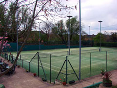
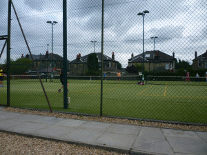

Welcome to the homepage for the McCrea Financial Services Glasgow West End Tennis Tournament. The tournament is open to members of the local participating clubs and includes competition for all age ranges and abilities. The tournament generally runs for 2 weeks in August with matches taking place across all of the clubs, culminating in a fun finals day which is hosted by one of the participating clubs.
The 2015 tournament ran in August 2015 and was hosted by Western Fitness and Rackets Club.
Tournament conditions can be downloaded here.
| Event | Winner(s) | Runner(s)-up |
|---|---|---|
| 8U Mixed Singles | Harrison Goss-Pastor | Ellen Phillips |
| 9U Mixed Singles | Robert Phillips | Harrison Goss-Pastor |
| 10U Mixed Singles | Robert Phillips | Nicholas Sproule |
| 12U Boys Singles | Aaron Purba | Kevin Lynch-Small |
| 12U Boys Doubles | Alex Goss – Pastor and Aaron Purba | Kevin Lynch Small and Bilal Zahid |
| 14U Boys Singles | Matthew Gibson-Smith | Aaron Purba |
| 14U Boys Doubles | Ewan McGill and Murray Ross | Charlie Kerr and Joel Wintle |
| 16U Boys Singles | Lewis Merrylees | Matthew Gibson-Smith |
| 16U Girls Singles | Kiera Wintle | Rebecca Caldwell |
| 16U Boys Doubles | Matthew Gibson-Smith and Thomas Whitelaw | Lewis Merrylees and Max Milarvie |
| 16U Girls Doubles | Brooke Caldwell and Rebecca Caldwell | Catherine Butler and Eilidh Gilchrist |
| Open Mens Singles | Calum Gibson-Smith | Russell Allan |
| Open Womens Singles | Erin Russell | Kirsty MacDonald |
| Open Mens Doubles | Antony Miles and Tony Williamson | Andrew MacKintosh and Gordon Pettigrew |
| Open Womens Doubles | Helen Anderson and Carolyn Morgan | Julia Campbell and Carole Dick |
| Open Mixed Doubles | Tony Williamson and Carolyn Morgan | Calum Gibson-Smith and Alex McGuigan |
| 45+ Mens Doubles | John James and Allan Whitelock | Lindsay Morrison and Craig Paterson |
| 45+ Womens Doubles | TBC (6th September) |
The prize for the club winning the most events went to the hosts, Western LTC